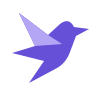

shotlark01Flight
Distinctive & lightA folded wing, an upward lift. A lark that makes the name its own.
23 px
Download SVG ↗Shotlark / Identity exploration
Four original marks for your screenshot studio.
Compare the character. Pick your favourite.

shotlarkA folded wing, an upward lift. A lark that makes the name its own.
Screenshot corners meet an S. Built around the act of capturing.
From a raw capture to a finished composition, one layer at a time.
A camera aperture with a print-studio wordmark. Capture meets craft.